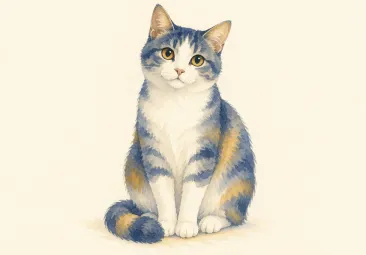

Missão Global IA · Caderno didático ilustrado
Uma jornada por quatro idiomas
Espanhol, italiano, latim e guarani paraguaio. Role a página e a câmera viaja até cada um deles.
Por Carlos Henrique · 2026
Vitrine do vocabulário
Pendure uma palavra, troque o idioma
As ilustrações do livro, penduradas numa arara. Arraste para o lado e escolha uma cor para ver a mesma palavra em outro idioma.
01 / 11
gato
gato
O livro de verdade
Folheie o Atlas em 3D
Doze páginas reais do caderno. Toque numa página ou arraste para o lado para virar, e use “Ampliar” para ler de perto.
Os módulos
Conheça, leia e pratique
Cada módulo tem seis temas. Toque nos cartões de expressão para virá-los e ver a tradução.
Números de 0 a 20
Conte nos quatro idiomas
Arraste o controle. Repare que o latim não tem zero, e que o guarani forma 15 juntando 10 (pa) e 5 (po).
Em algarismo romano: VII
Alfabeto espanhol · 27 letras
Gire os cubos das letras
Cada cubo tem quatro faces: a letra, uma palavra, a tradução e o nome da letra. Toque para girar. Ao chegar na palavra, o site fala a pronúncia.
De onde vêm as línguas
A árvore das línguas
Três idiomas do livro são primos do português. O guarani vem de outra família. Toque numa caixa para saber mais.
Jogo da memória
Ache o par: desenho e palavra
Vire duas cartas por vez. Cada ilustração tem um par com o nome dela no idioma escolhido.
Monte a frase
Coloque as palavras na ordem
Frases tiradas dos módulos do livro. Toque nas palavras para montar a frase e confira.
Como se diz…
Compare
A mesma ideia, quatro idiomas
Espanhol e italiano vieram do latim falado. O guarani pertence a outra família, nascida na América do Sul.
| Português | Espanhol | Italiano | Latim | Guarani |
|---|

Desafio
De que idioma é esta palavra?
A palavra é …
Nota de precisão
“Tupi-guarani” é uma família de línguas. O módulo apresenta o guarani paraguaio contemporâneo, também chamado avañe’ẽ. Quando o livro não traz uma tradução para o guarani, o site também não inventa uma.